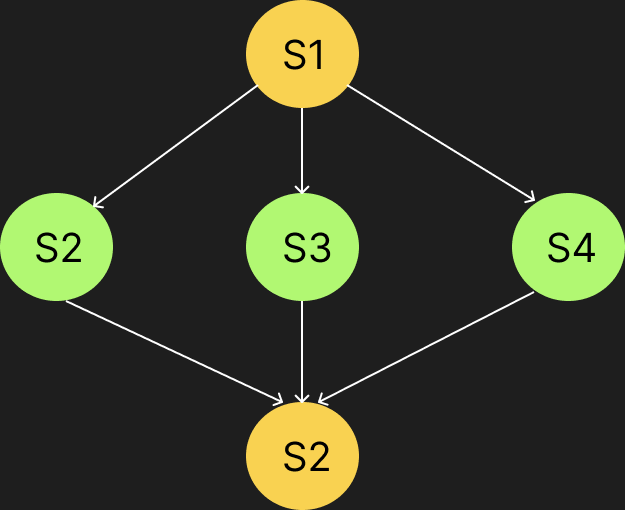

Elaborazione sequenziale e concorrente
Ovviamente il nostro sistema operativo implementa da ora con il nuovo aggiornamento, l'elaborazione concorrente ma andiamo ad osservare nel dettaglio il loro funzionamento.
Elaborazione sequenziale
Con elaborazione sequenziale s'intende l'esecuzione di un programma che genera un processo sequenziale con un ordinamento totale delle azioni che vengono eseguite. Essa, è un concetto fondamentale dell'informatica in quantoi gli algoritmi che vengono da noi sviluppati sono composti da una sequenza finita di istruzioni.
Esistono tuttavia, programmi che per la loro corretta esecuzione necessitano di elaborazioni parallele come ad esempoi il multiplayer all'interno di un videogioco. in questo caso l'elaborazione sequenziale non è sufficiente, per questo introduciamo adesso...
La programmazione concorrente
Con programmazione concorrente intendiamo le tecniche
e gli strumenti utilizzati per descrivere il comportamento di più processi
che vengono eseguiti nello stesso momento sulla stessa macchina.
Tuttavia questo tipo di elaborazione concorrente si verifica solo se la macchina
sia dotata di un' architettura multiprocessore.
In caso contrario, avviene un parallelismo "virtualizzato" grazie alla multiprogrammazione.
Cosa succede in un sistema multiprogrammato?
In un sistema multiprogrammato i programmi utente e le singole funzioni svolte dall'os sono considerati processi che concorrono alle stesse risorse.
Cos'è quindi un sistema concorrente?
Un sistema concorrente è un sistema che gestisce contemporaneamente un insieme di attività diverse che, cooperano oppure concorrono per l'uso della stessa risorsa.
Grafo delle Precedenze
Un grafo delle precedenze è un diagramma che rappresenta l’ordine delle attività in un
progetto, mostrando quali attività devono essere completate prima di altre.
Prendiamo d'esempio l'espressione matematica
[(4 + 2) - (10 \ 2)]^2 * [(8-2) / (4+2)].
Lo pseudo-codice che descrive questo grafico è il seguente:
cobegin
cobegin
A: 4 + 2
B: 10 / 2
coend
E: A - B
E²: E ^ 2
coend
cobegin
cobegin
C: 8 - 2
D: 4 + 2
coend
F: C / D
coend
Risultato: E² * F
La Fork join
La fork join è un costrutto che serve per descrivere l'esecuzione parallela di segmenti di codice, scomponendo un processo in due processi, la join poi servirà successivamente per riunire i due processi in uno solo.
La Fork
La fork corrisponde alla divisione di un nodo in due rami, se parliamo di processi il processo padre si divide creando un processo figlio. Cosi il codice del processo padre e figlio viene eseguito in parallelo. Qui sotto è riportato un esempio della fork
La join
La join invece è il contrario della fork, ovvero i processi quando sono divisi, quando viene chiamata la join si riuniscono in un solo processo e si sincronizzano.
Esiste una seconda versione della join ovvero la join(count). Questa ha la stessa funzione della join soltanto che ha in più la variabile count, che è una variabile intera che non può essere negativa e indica il numero di processi che si devono riunire e consente quindi di riunire più processi rispetto alla join normale che ne unisci solo 2.
Cobegin-Coend
C'è un'altro costrutto che c'è il Cobegin-Coend. Attraverso il Cobegin si può indicare il numero di processi che iniziano contemporaneamente l'esecuzione e poi con Coend il punto in cui tutti i processi terminano l'esecuzione in un punto

codice per l'esempio
Inizio{
S1
cobegin
S2
S3 // qui vengon svolte i codici parallelamente
S4
coend
S5
}fine
Il DeadLock
Deadlock Con il deadlock andiamo a indicare delle situazioni nelle quali dei processi si ostacolano a vicenda impedendomi a vicenda di portare a termine il lavoro. Non tutti i problemi però portano alla situazione di deadlock, affinché ci sia questo infatti sono necessarie 4 condizioni che devono verificarsi contemporaneamente e sono:
- mutua esclusione, ogni risorsa è assegnata solo ad un processo o è libera
- assenza di prerilascio, le risorse usate in un processo non possono essere rilasciate prima del completamento dell'esecuzione
- richieste bloccanti, hold and wait
- attesa circolare, nel sistema devono essere presenti almeno due processi nei quale uno di questi è in attesa di una risorsa usata dall'altro processo.Questo può dimostrarsi con i grafi di holt.
Per affrontare il deadlock ci sono 4 modi:
- detection e recovery, riconoscerlo e eliminarlo
- avoidance, evitare che questo problema avvenga tramite delle specifiche allocazioni
- preventivo, impedire che questo avvenga facendo si che una delle 4 condizioni non si verifichi
- ignorare il problema
Il problema dei filosofi
Un classico esempio è il problema dei filosofi a cena ci sono 5 filosofi, 5 piatti e 5 forchette, ogni filosofo agisce in due fasi:
-la prima fase in cui pensa, lasciando le forchette sul tavolo
-la seconda fase in cui mangia, per la quale ha bisogno di due forchette, una per mano
questo si può risolvere in vari modi per esempio:
prendiamo come esempio un filosofo qualunque, appena smette di pensare prende prima la forchetta sinistra, poi quella destra e mangia finché non è sazio, dopo lascia le forchette; questo modo di risolvere il problema può portare a degli intoppi come per esempio se tutti i filosofi dovessero prendere la forchetta di sinistra contemporaneamente nessuno mangerebbe, questo possiamo risolverlo con l'allocazione totale e quindi assegnando tutte le risorse all'inizio e contemporaneamente, in questo caso do entrambe le forchette al filosofo contemporaneamente